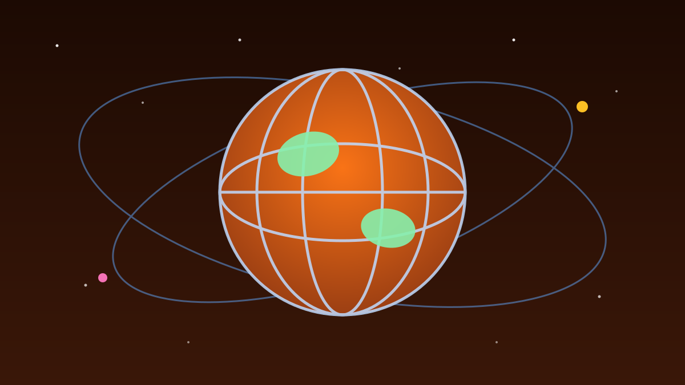

1 / 7

🌍 DUNIA
Robot NASA Road Trip 45,2 Km di Mars!
Jaraknya setara Jakarta–Bogor — tapi ditempuh di planet lain. Geser buat detailnya →
2 / 7
🛰️
Rekornya Pecah 11 Oktober
Odometer rover Perseverance tembus 28,10 mil (45,22 km) per 11 Oktober 2026 — diumumkan NASA Selasa 13/10/2026.
Itu menjadikannya kendaraan yang menempuh jarak terjauh di permukaan planet lain dalam sejarah. Guinness World Records ikut mencatatnya.
3 / 7
🏆
Mengalahkan Legenda Opportunity
Rekor sebelumnya dipegang rover Opportunity (2004–2018): 28,06 mil (45,16 km). Selisihnya cuma sekitar 60 meter.
Tapi plot twist-nya: Perseverance menempuhnya dalam 5,5 tahun, sedangkan Opportunity butuh hampir 15 tahun.
4 / 7
🤖
Rahasianya: Nyetir Sendiri
Sistem navigasi otonom AutoNav bikin lebih dari 90% jarak ditempuh mandiri — Opportunity cuma ~5%. Tiap "pandangan" diproses 600.000 titik pengukuran (rover Sojourner cuma 20 titik).
Hasilnya? Perseverance bisa jalan sampai 412 meter dalam satu sol Mars. AI yang beneran kerja.
5 / 7
🗺️
Dicapai di Rim Barat Kawah Jezero
Pencapaian dicetak pada sol ke-2.006 misi, saat menuju area "Idubi" melewati "Lac de Charmes" — medan yang disebut NASA termasuk yang tertua di tata surya.
Project manager Steven Lee bilang hardware dan instrumennya "in excellent shape", diprediksi bisa beroperasi hingga 2030-an. Misinya diperpanjang sampai akhir 2028.
6 / 7
🧬
Tetap: Berburu Jejak Alien Purba
Misi utama tetap pencarian tanda kehidupan mikroba purba. Target berikutnya: jejak sistem hidrotermal kuno di area Idubi.
Menurut Lee, pencapaian terbesar sejauh ini mungkin adalah "potential biosignature" yang ditemukan tahun lalu di batuan berumur 3,2–3,8 miliar tahun.
7 / 7
🤔
Efeknya ke lo apa?
AutoNav ini blueprint teknologi mobil otonom di Bumi — bedanya, ini "nyetir" tanpa sinyal, tanpa jalan, tanpa bengkel.
Plus, kalau batuan 3,8 miliar tahun itu beneran menyimpan fosil mikroba, itu jawaban atas pertanyaan paling tua manusia: kita sendirian atau nggak?